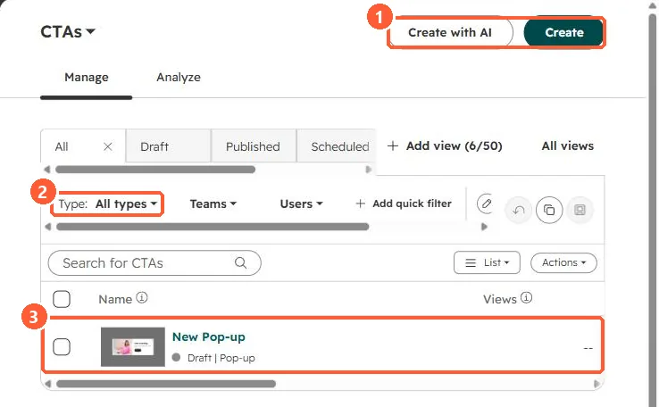

Short answer
Pop-ups now live in Marketing > CTAs. HubSpot's KB lists pop-up box, slide-in (a banner that slides in from a corner) and sticky banner types, which you can also trigger when a visitor clicks a button. You can hide them on small screens. If one does not appear, check the targeting, the trigger and whether it was hidden for that screen size.
1. The CTA tool
My demo portal has one draft pop-up in the CTA list.


2. Old CTAs
Legacy CTAs are a separate tool. See legacy vs new CTAs.
3. Forms inside pop-ups
A pop-up can include a form. Spam controls still apply. See form spam settings.